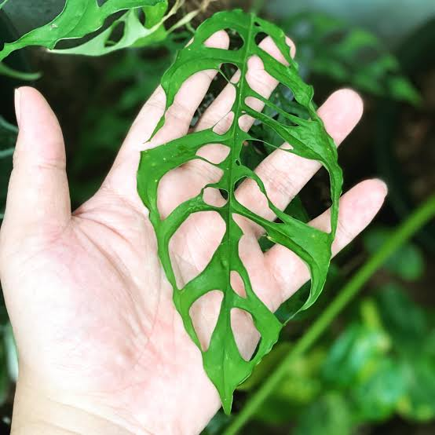
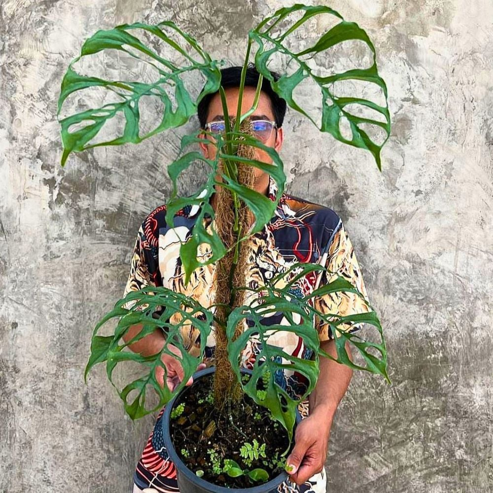

Monstera Obliqua Peru
This variety has such a striking appearance, I knew I had to have it once I had seen it. At this time, I had a glass plant cabinet set up and felt confident I had the right humidity to propagate the plant. However, this monstera is one of the most difficult to cultivate and I ultimately failed to propogate a cutting of this plant, twice! I did manage to get it to produce a few leaves but it never took root outside of its moss-filled propogation container.
Interestingly enough, it does not appear to be a slow grower in the wild. It's only in cultivation that it seems to produce smaller leaves with a much slower growth habit. It does happen to be one of the more tropical versions of monstera, meaning it requires some of the highest constant humidity to grow and thrive.


Obliqua Peru Stats
| Native Range | Peru, Tropical South America |
|---|---|
| Growth Habit | Climbing Hemiepiphyte |
| Growth Rate | Slow when cultivated |
| Fenestration | Extreme interior perforation |
| Mature Leaf Size | 4 to 10 in. |
| Time to Mature Foliage | Approx. 3-6 years |
A Unique Leaf Development
The extraordinarily perforated leaves of Monstera obliqua ‘Peru’ are not created by the leaf tearing as it grows. Instead, its fenestrations begin forming while the leaf is still tightly rolled inside the growing tip. Small, precisely positioned groups of cells undergo programmed cell death, creating microscopic openings that expand along with the rest of the leaf until they become the plant's characteristic large holes.
Although the heavily fenestrated Peruvian form is the M. obliqua most familiar to collectors, the species itself is surprisingly variable throughout its range. Monstera obliqua occurs across parts of Central and South America, and not every population develops the extremely perforated foliage associated with the Peru form. This makes ‘Peru’ a particularly dramatic expression of an already highly variable species.

Resources
- PeaceLoveHappinessClub - One of my favorite boutique plant shops.
- eBay - A surprising place to find rare plant cuttings
- Serpentine LA - Inspired interior/exterior design using sculpted plants.